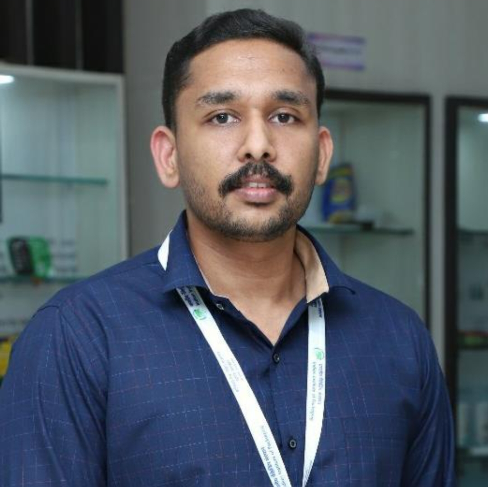

Resume

Name: Sreejith S Nair, Web Developer
Address: E-2, MIDC Area, Andheri East, Mumbai, PIN: 400093
Contact: +91-8075714408, Email: sreejiths2002@gmail.com
Summary
Web Developer who is learning to to develop responsive, user-friendly websites for high-traffic e-commerce platforms to increase user engagement. Learning to utilize JavaScript, HTML, CSS, and React.js to create robust and scalable applications.
Experience
Finance, Administration, IT & Procurements, INDIAN INSTITUTE OF PACKAGING - IIP
May 2014 - Continuing
Thrilled to share that I am a Public Administration Manager with 9+
years of experience at the Indian Institute of Packaging!
In my role, I have been responsible for overseeing the
organization's administrative functions, ensuring that they run
smoothly and efficiently.
Finance Manager, HAMNET BUILDERS & DEVELOPERS PVT LTD
April 2013 - May 2014
As a financial manager in Hamnet Builders Developers Private
Limited located in Kerala
Accountant, BINA MEGA SDN BHD (FORMER GALFAR PEMBINAN DAN PARASUHAAN (B) SDN BHD)
August 2011 - March 2013
Controlling and verifying LC (Letter of Credit) transactions within
Brunei Darussalam.
Education
Certifications
- Operations Management, June 2022 - November
2022
- Inventory Management, June 2022 - November
2022
- Supply Chain Management, June 2022 -
November 2022
- Data Science Foundations, June 2022 - October
2022
- Strategic Management, June 2022 - November
2022
- Quality Management Systems as per IS/ISO
9001:2015 & Inernal Audit, February 2022 - February 2022
Professional Degree
- Master's degree (M.Com), Finance, Madurai Kamaraj University, June 2016 - June 2018
- Bachelor of Commerce (B.Com), Business/Commerce, University of Kerala, June 2005 - June 2008